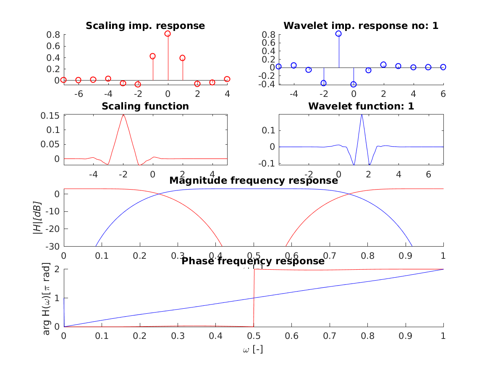
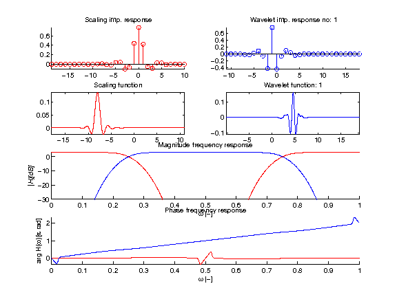

[h,g,a] = wfilt_coif(K);
[h,g,a]=wfilt_coif(K) with \(K \in {1,2,3,4,5}\) returns a Coiflet filters of order \(2K\) the number of vanishing moments of both the scaling and the wavelet functions.
Values are taken from table 8.1 from the reference. REMARK: There is a typo in 2nd element for \(K==1\).
wfiltinfo('coif2');
This code produces the following output:
|Scaling imp. response Wavelet imp. response no: 1
0.8 +|+ F 0.8 +|+ F
0.6 +|+ F * F 0.6 +|+ *
0.2 +|------------------------- -0.0
0 :math:``:math:``:math:``:math:``:math:``:math:``:math:``:math:``:math:``:math:``:math:``:math:``:math:`` -0.4 +-+ F F + + +
|--Scaling function------| |-Wavelet function: 1----|
0.15 +|+ + ** + + +-+| 0.15 +|+ + + **+ + +-+|
0.1 +|+ + *** + + +-+| 00.1 +|+ + + **+ + +-+|
0.05 +|------------------------| -0.00 *|------------------------|
0 ******** + *************** -0.1 +-+ + + ** * + +-+
-4 -2 0 2 4 -2 0 2 4 6
| Magnitude frequency response
-0 *|**********######################################***********
|H|[dB]0 +|------------------------------------------------------------
-25 +-+ ### + *** *** + ### +
0 0.2 0.4 0.6 0.8 1
| Phase frequency response
2 +|+ *********************##########
1.5 #|+ ######################
0.5 #|------------------------------------------------------------
0 ##########********************* + + +
0 0.2 0.4 0.6 0.8 1

wfiltinfo('coif5');
This code produces the following output:
|Scaling imp. response Wavelet imp. response no: 1
| F 0.6 +|+ F
0.6 +|+ FF 0.4 +|+ *
0.2 +|------------------------- -0.0
0 :math:``:math:``:math:``:math:``:math:``:math:``:math:``:math:``:math:``:math:``:math:``:math:``:math:`` -0.4 +++ + FF + + +
|--Scaling function------| -|-Wavelet function: 1----|
| + +** + + + + | 0.15 +|+ + + ** + ++-+|
0.1 +|++ +** + + + +++| 00.1 +|+ + + ** + ++-+|
0.05 +|------------------------| -0.00 *|------------------------|
0 ************************** -0.1 +-+ + + ** + ++-+
-15 -10 -5 0 5 10 -5 0 5 10 15
| Magnitude frequency response
-0 *|***********###################################*************
|H|[dB]0 +|------------------------------------------------------------
-25 +-+ ## + ***+ + ** + ### +
0 0.2 0.4 0.6 0.8 1
| Phase frequency response
2 +|+ ###############
1.5 #|+ ################################## #
-0.0 #|------------------------------------------------------------
-1 +-+ + + * + + +
0 0.2 0.4 0.6 0.8 1

I. Daubechies. Ten Lectures on Wavelets. Society for Industrial and Applied Mathematics, Philadelphia, PA, USA, 1992.